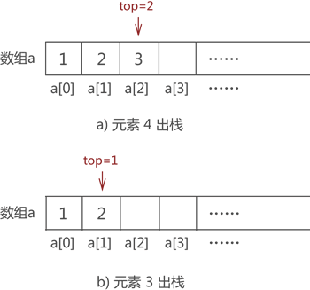
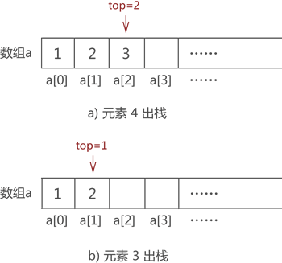

阅读：0
作者：解学武
顺序栈基本操作（入栈和出栈）C语言详解
顺序栈指的是用顺序表实现的栈存储结构，通过前面的学习我们知道，栈存储结构存取数据元素必须遵守 "先进后出" 的原则。本节就给大家详细讲解如何使用顺序表模拟栈结构，以及实现元素的入栈和出栈操作。
顺序表和栈存储数据的方式高度相似，只不过栈对数据的存取过程有特殊的限制，而顺序表没有。例如，我们使用顺序表（用 a 数组表示）存储

图 1 顺序表存储 {1,2,3,4}
使用栈存储结构存储

图 2 栈结构存储 {1,2,3,4}
对比图 1 和图 2 不难看出，用顺序表模拟栈结构很简单，只要将数据从数组下标为 0 的位置依次存储即可。
栈中存取元素，必须遵循“先进后出”的原则，因此若想将图 1 中存储的元素 1 从栈中取出，需依次先将元素 4、元素 3 和元素 2 从栈中取出，最后才能取出元素 1。
这里给出一种顺序表模拟入栈和出栈的实现思路：定义一个实时记录栈顶位置的变量（假设命名为 top），初始状态下栈内无任何元素，整个栈是"空栈"，top 的值为 -1。一旦有数据元素进栈，则 top 就做 +1 操作；反之，如果数据元素出栈，top 就做 -1 操作。

图 3 空栈示意图
将元素 1 入栈，默认数组下标为 0 一端表示栈底，元素 1 存储在数组 a[0] 处，同时 top 值 +1，如图 4 所示：

图 4 模拟栈存储元素 1
采用同样的方式，依次将元素 2、3 和 4 入栈，最终 top 的值变成 3，如图 5 所示：

图 5 模拟栈存储{1,2,3,4}
因此，C 语言实现代码为：
比如，将图 5 中的元素 2 出栈，则需要先将元素 4 和元素 3 依次出栈。需要注意的是，当有数据出栈时，要将 top 做 -1 操作。因此，元素 4 和元素 3 出栈的过程分别如图 6a) 和 6b) 所示：

图 6 数据元素出栈
元素 4 和元素 3 全部出栈后，元素 2 才能出栈。因此，使用顺序表模拟数据出栈操作的 C 语言实现代码为：
顺序表和栈存储数据的方式高度相似，只不过栈对数据的存取过程有特殊的限制，而顺序表没有。例如，我们使用顺序表（用 a 数组表示）存储
{1,2,3,4}，存储状态如图 1 所示：
图 1 顺序表存储 {1,2,3,4}
使用栈存储结构存储
{1,2,3,4}，存储状态如图 2 所示：
图 2 栈结构存储 {1,2,3,4}
对比图 1 和图 2 不难看出，用顺序表模拟栈结构很简单，只要将数据从数组下标为 0 的位置依次存储即可。
从数组下标为 0 的模拟栈存储数据是常用的方法，从其他数组下标处存储数据也完全可以，这里只是为了方便初学者理解。
了解了顺序表模拟实现栈存储结构之后，接下来学习如何实现元素入栈和出栈的操作。栈中存取元素，必须遵循“先进后出”的原则，因此若想将图 1 中存储的元素 1 从栈中取出，需依次先将元素 4、元素 3 和元素 2 从栈中取出，最后才能取出元素 1。
这里给出一种顺序表模拟入栈和出栈的实现思路：定义一个实时记录栈顶位置的变量（假设命名为 top），初始状态下栈内无任何元素，整个栈是"空栈"，top 的值为 -1。一旦有数据元素进栈，则 top 就做 +1 操作；反之，如果数据元素出栈，top 就做 -1 操作。
顺序栈元素"入栈"
比如，还是模拟栈存储{1,2,3,4} 的过程。最初栈是"空栈"，top 的值为 -1，如图 3 所示：
图 3 空栈示意图
将元素 1 入栈，默认数组下标为 0 一端表示栈底，元素 1 存储在数组 a[0] 处，同时 top 值 +1，如图 4 所示：
图 4 模拟栈存储元素 1
采用同样的方式，依次将元素 2、3 和 4 入栈，最终 top 的值变成 3，如图 5 所示：
图 5 模拟栈存储{1,2,3,4}
因此，C 语言实现代码为：
//元素elem进栈，a为数组，top值为当前栈的栈顶位置
int push(int* a,int top,int elem){
a[++top]=elem;
return top;
}
代码中的 a[++top]=elem，等价于先执行 ++top，再执行 a[top]=elem。顺序栈元素"出栈"
实际上，top 变量的设置对模拟数据的 "入栈" 操作没有帮助，它是为实现数据的 "出栈" 操作做准备的。比如，将图 5 中的元素 2 出栈，则需要先将元素 4 和元素 3 依次出栈。需要注意的是，当有数据出栈时，要将 top 做 -1 操作。因此，元素 4 和元素 3 出栈的过程分别如图 6a) 和 6b) 所示：

图 6 数据元素出栈
元素 4 和元素 3 全部出栈后，元素 2 才能出栈。因此，使用顺序表模拟数据出栈操作的 C 语言实现代码为：
//数据元素出栈
int pop(int * a,int top){
if (top == -1) {
printf("空栈");
return -1;
}
printf("弹栈元素：%d\n",a[top]);
top--;
return top;
}
代码中的 if 语句是为了防止用户做 "栈中已无数据却还要做出栈操作" 的错误操作。细心的读者还可能发现，出栈操作只是将 top 的值减 1，并没有像图 6 那样将出栈元素从数组中手动删除。这是因为，当有新的元素入栈后，新元素会将出栈元素覆盖掉，所以不删除出栈元素，也不会影响栈的正常使用，何必多此一举。总结
通过学习顺序表模拟栈中数据入栈和出栈的操作，初学者完成了对顺序栈的学习，这里给出顺序栈及对数据基本操作的 C 语言完整代码：
#include <stdio.h>
//元素elem进栈
int push(int* a, int top, int elem) {
a[++top] = elem;
return top;
}
//数据元素出栈
int pop(int* a, int top) {
if (top == -1) {
printf("空栈");
return -1;
}
printf("弹栈元素：%d\n", a[top]);
top--;
return top;
}
int main() {
int a[100];
int top = -1;
top = push(a, top, 1);
top = push(a, top, 2);
top = push(a, top, 3);
top = push(a, top, 4);
top = pop(a, top);
top = pop(a, top);
top = pop(a, top);
top = pop(a, top);
top = pop(a, top);
return 0;
}
程序输出结果为：
弹栈元素：4
弹栈元素：3
弹栈元素：2
弹栈元素：1
空栈